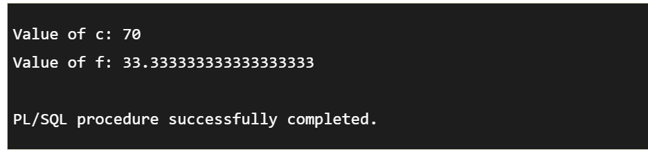
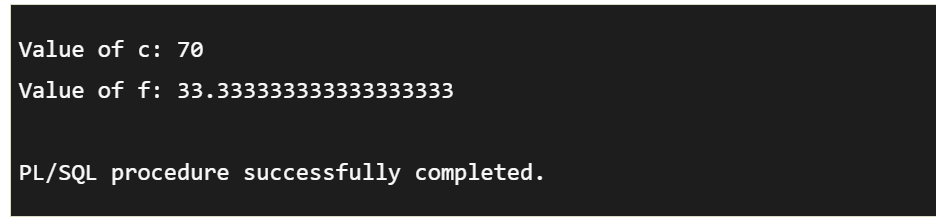

Data Types, Variables and Constants
A variable is a meaningful name which facilitates a programmer to store data temporarily during the execution of code. It helps you to manipulate data in PL/SQL programs. It is nothing except a name given to a storage area. Each variable in the PL/SQL has a specific data type which defines the size and layout of the variable's memory.Syntax for declaring variable:
variable_name [CONSTANT] datatype [NOT NULL] [:= | DEFAULT initial_value]
Initializing Variables in PL/SQL
Evertime you declare a variable, PL/SQL defines a default value NULL to it. If you want to initialize a variable with other value than NULL value, you can do so during the declaration, by using any one of the following methods.The DEFAULT keyword
The assignment operator
PL/SQL Constants
A constant is a value used in a PL/SQL block that remains unchanged throughout the program. It is a user-defined literal value. It can be declared and used instead of actual values.Syntax to declare a constant:
constant_name CONSTANT datatype := VALUE;
Constant_name:it is the name of constant just like variable name. The constant word is a reserved word and its value does not change.
VALUE: it is a value which is assigned to a constant when it is declared. It can not be assigned later.
 
